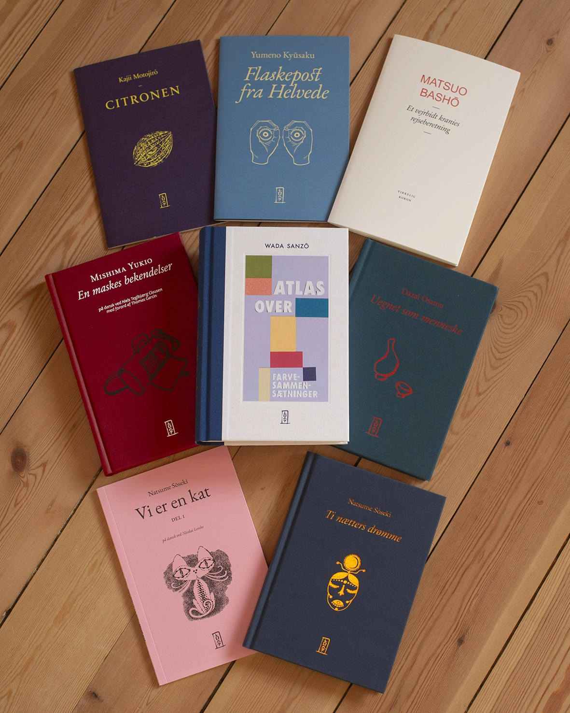
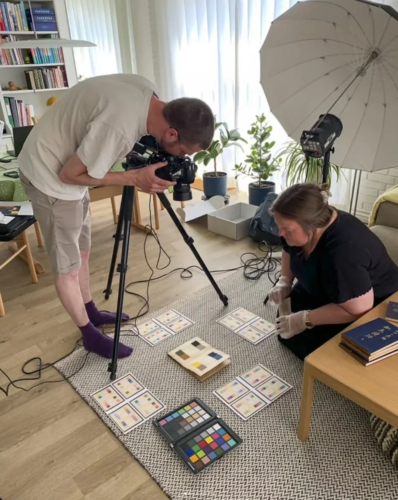

01
Opdag
Mød klassiske og nye japanske stemmer og fortællinger.
Japanske udgivelserForlaget Kokon
Fordyb dig i japansk litteratur gennem nøje udvalgte og elegant formgivne bøger.
Udforsk vores udgivelser
Henter den fremhævede udgivelse…
Bogen som portal
Kokon lader bogen åbne vejen til fortællingen, forfatteren og den kultur, værket udspringer af.
01
Mød klassiske og nye japanske stemmer og fortællinger.
02
Læs om værket, forfatteren og deres samtid.
03
Gå på opdagelse i oversete værker og forfatterskaber.

Om Kokon
Mikroforlaget Kokon er baseret i Thy og udvælger, oversætter og udgiver japansk skøn- og faglitteratur.
Mød forlaget